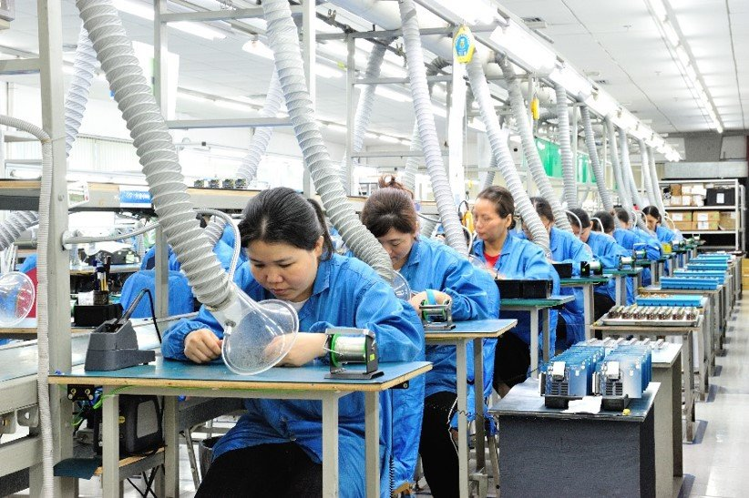
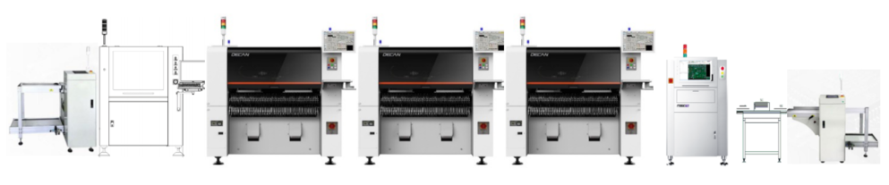
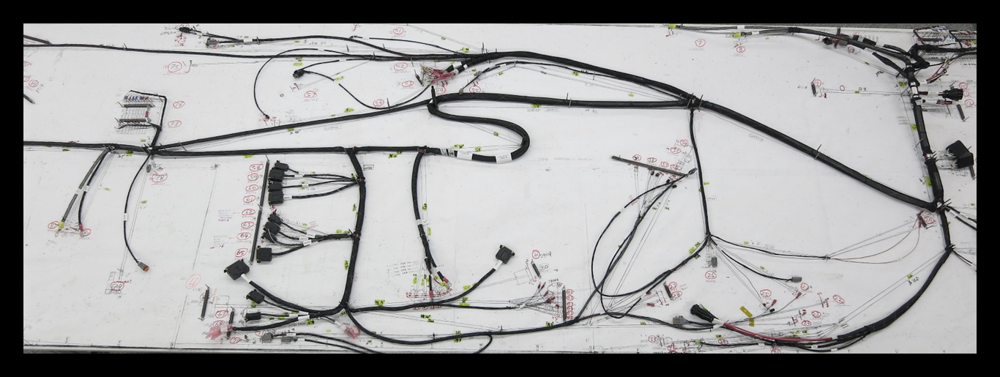
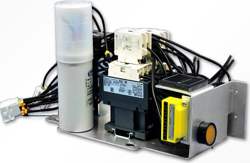

按工艺主路径组织：SMT、插件、线束、机电装配与测试。只放能支撑判断的事实，不堆设备清单。

从 SMT / 插件到线束与整机，测试嵌在路径中。下面按模块展开关键参数与现场图。

锡膏印刷 → 高速贴片 → 回流 → AOI / X-Ray。支持 RoHS 或有铅、水洗或免洗。
成型、插装、波峰焊、DI 清洗（如适用）、手焊与过程质量检查。

压接、焊接与 IDC；面向工业、汽车与航空类定制线束。

Box-build、ICT/FCT、老化、环境试验与定制包装。
热压焊（FPC-Rigid）、自动敷形涂覆、激光标识、温循（-70°C~+200°C）与老化（至 +150°C）可按项目配置，不单独做成空栏目。